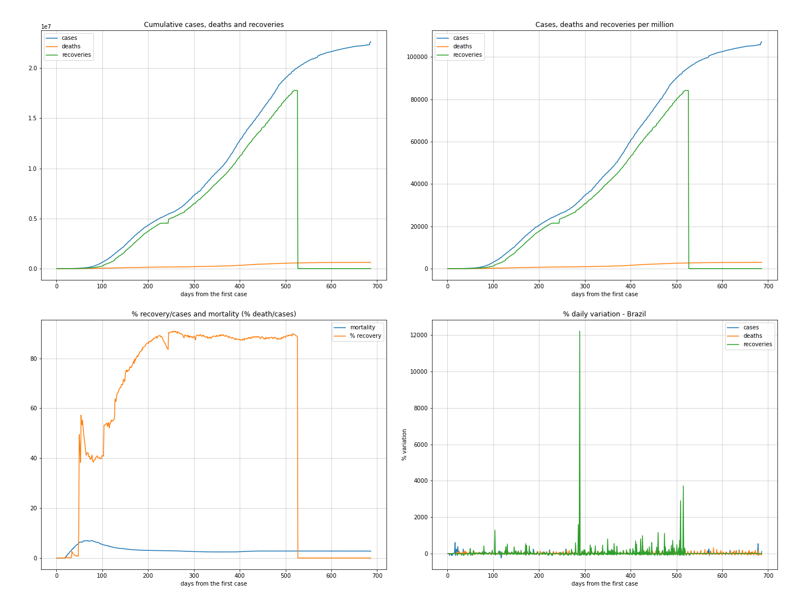

These analysis are related to Brazil Convid19 pandemic data up to 08/02/2020.
This information is for own use only and shall NOT be used for medical and public policy guidances.
| 26/07/2020 | 02/08/2020 | variations | |
|---|---|---|---|
| cases | 2421666 | 2734619 | 312953 (12%) |
| deaths | 87117 | 94158 | 7041 (8%) |
Moving average over last 7 days.
Move the mouse over the map for each region details.
Moving average over last 7 days.
Move the mouse over the map for each region details.
This ranking is made from the total of deaths per each thousand of population of each state.
| state | date | day | population | case_day | cases | death_day | deaths | cases_thousand | deaths_thousand | perc_death | |
|---|---|---|---|---|---|---|---|---|---|---|---|
| 1 | RR | 2020-08-01 | 131 | 605761 | 428 | 33151 | 0 | 513 | 54,726 | 0,847 | 1,55 |
| 2 | CE | 2020-08-02 | 140 | 9132078 | 402 | 176773 | 6 | 7710 | 19,357 | 0,844 | 4,36 |
| 3 | AM | 2020-08-02 | 139 | 4144597 | 347 | 102124 | 5 | 3283 | 24,640 | 0,792 | 3,21 |
| 4 | RJ | 2020-08-02 | 142 | 17264943 | 12 | 167225 | 16 | 13572 | 9,686 | 0,786 | 8,12 |
| 5 | PE | 2020-08-02 | 144 | 9557071 | 1224 | 97970 | 37 | 6634 | 10,251 | 0,694 | 6,77 |
| 6 | AP | 2020-08-02 | 135 | 845731 | 44 | 36639 | 3 | 571 | 43,322 | 0,675 | 1,56 |
| 7 | PA | 2020-08-02 | 138 | 8602865 | 220 | 156505 | 11 | 5784 | 18,192 | 0,672 | 3,70 |
| 8 | ES | 2020-08-02 | 150 | 4018650 | 441 | 84255 | 13 | 2578 | 20,966 | 0,642 | 3,06 |
| 9 | SE | 2020-08-02 | 131 | 2298696 | 311 | 60035 | 17 | 1465 | 26,117 | 0,637 | 2,44 |
| 10 | AC | 2020-08-02 | 139 | 881935 | 36 | 19966 | 2 | 537 | 22,639 | 0,609 | 2,69 |
This ranking is made from the total of cases per each thousand of population of each state.
| state | date | day | population | case_day | cases | death_day | deaths | cases_thousand | deaths_thousand | perc_death | |
|---|---|---|---|---|---|---|---|---|---|---|---|
| 1 | RR | 2020-08-01 | 131 | 605761 | 428 | 33151 | 0 | 513 | 54,726 | 0,847 | 1,55 |
| 2 | AP | 2020-08-02 | 135 | 845731 | 44 | 36639 | 3 | 571 | 43,322 | 0,675 | 1,56 |
| 3 | DF | 2020-08-02 | 148 | 3015268 | 2106 | 110028 | 33 | 1523 | 36,490 | 0,505 | 1,38 |
| 4 | SE | 2020-08-02 | 131 | 2298696 | 311 | 60035 | 17 | 1465 | 26,117 | 0,637 | 2,44 |
| 5 | AM | 2020-08-02 | 139 | 4144597 | 347 | 102124 | 5 | 3283 | 24,640 | 0,792 | 3,21 |
| 6 | AC | 2020-08-02 | 139 | 881935 | 36 | 19966 | 2 | 537 | 22,639 | 0,609 | 2,69 |
| 7 | RO | 2020-08-02 | 128 | 1777225 | 389 | 39893 | 3 | 884 | 22,447 | 0,497 | 2,22 |
| 8 | ES | 2020-08-02 | 150 | 4018650 | 441 | 84255 | 13 | 2578 | 20,966 | 0,642 | 3,06 |
| 9 | PB | 2020-08-02 | 144 | 4018127 | 547 | 84008 | 17 | 1850 | 20,907 | 0,460 | 2,20 |
| 10 | CE | 2020-08-02 | 140 | 9132078 | 402 | 176773 | 6 | 7710 | 19,357 | 0,844 | 4,36 |

